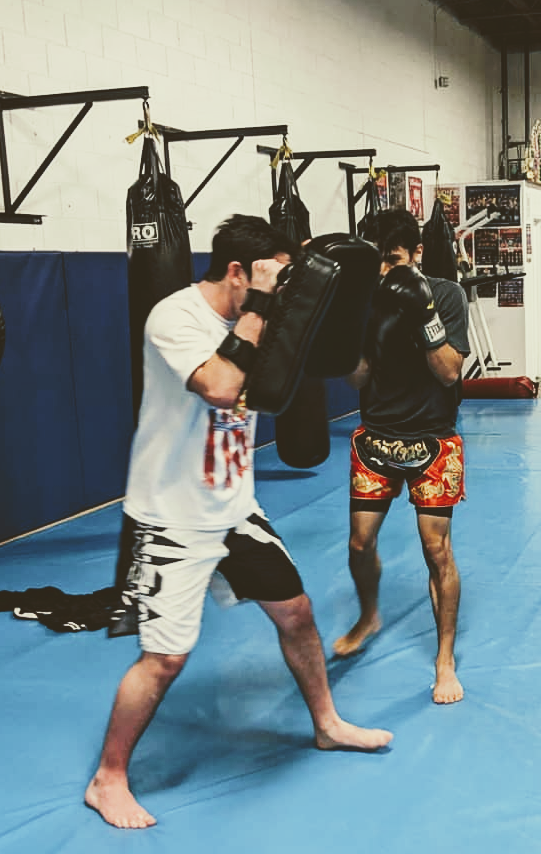
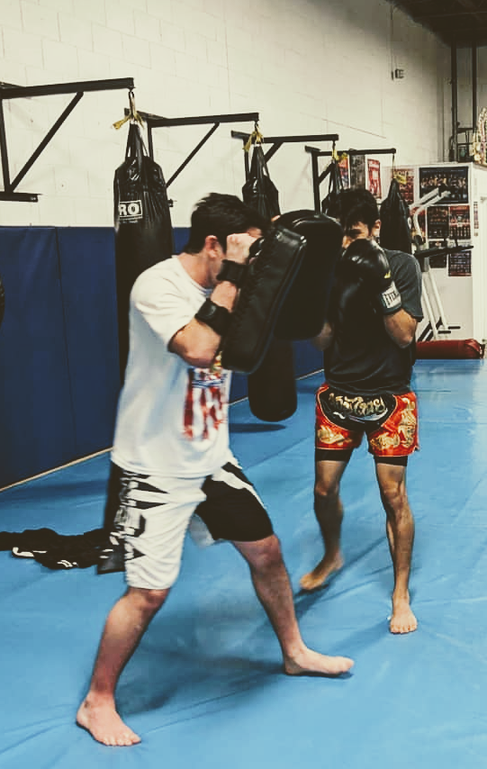

About Me

I am a highly motivated and curious individual who follows the philosophy of Kaizen, I aim to constantly improve and learn. Whether it is hard technical skills, or soft skills, I love learning new things and applying them effectively.
I recently graduated-Fall 2019-from Cal Poly SLO with a BS in Liberal Arts and Engineering (LAES). LAES is an interdisciplinary major combining an engineering concentration with a liberal arts concentration. Therefore, I combined Computer Science with Psychology to focus user-centered interfaces and design. Now I am learning more about web development so I can become a full-time Web Developer.
On my spare time I am either outdoors with my dog Taku
 or I am training as Muay Thai practioner/fighter and hope to one day
fight in the Rajadamnern Boxing Stadium, Thailand.

or I am training as Muay Thai practioner/fighter and hope to one day
fight in the Rajadamnern Boxing Stadium, Thailand.
